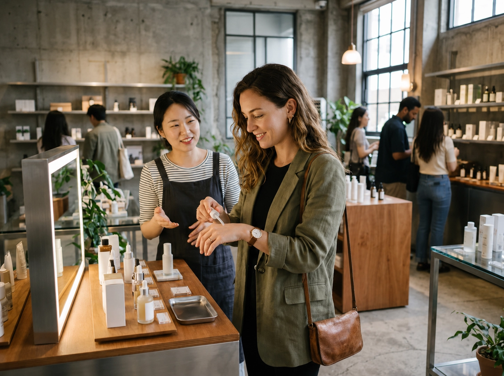

Skincare Shopping
Skincare is the easiest part of K-Beauty to explore without much planning. Olive Young branches are everywhere in Seoul, while department stores, brand flagships and smaller specialty shops offer a wider range of products and price points.
If you are trying a product for the first time, especially on sensitive skin, avoid opening several new products at once. It is also worth photographing the exact product name and size before leaving Korea, because packaging can look very similar across a brand's range.